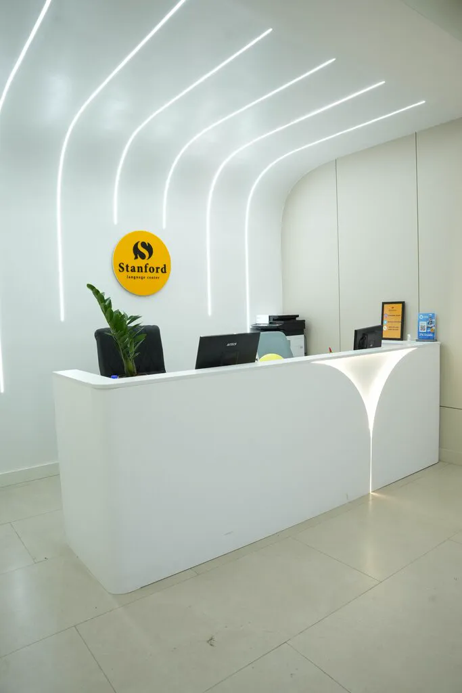
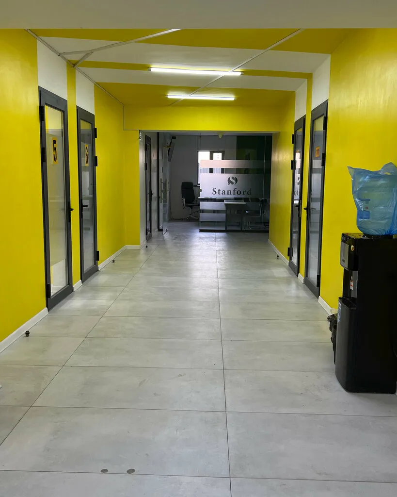
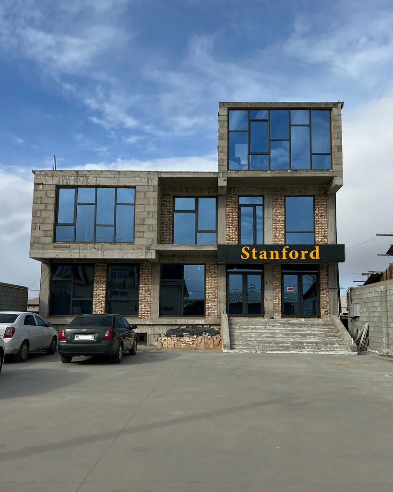
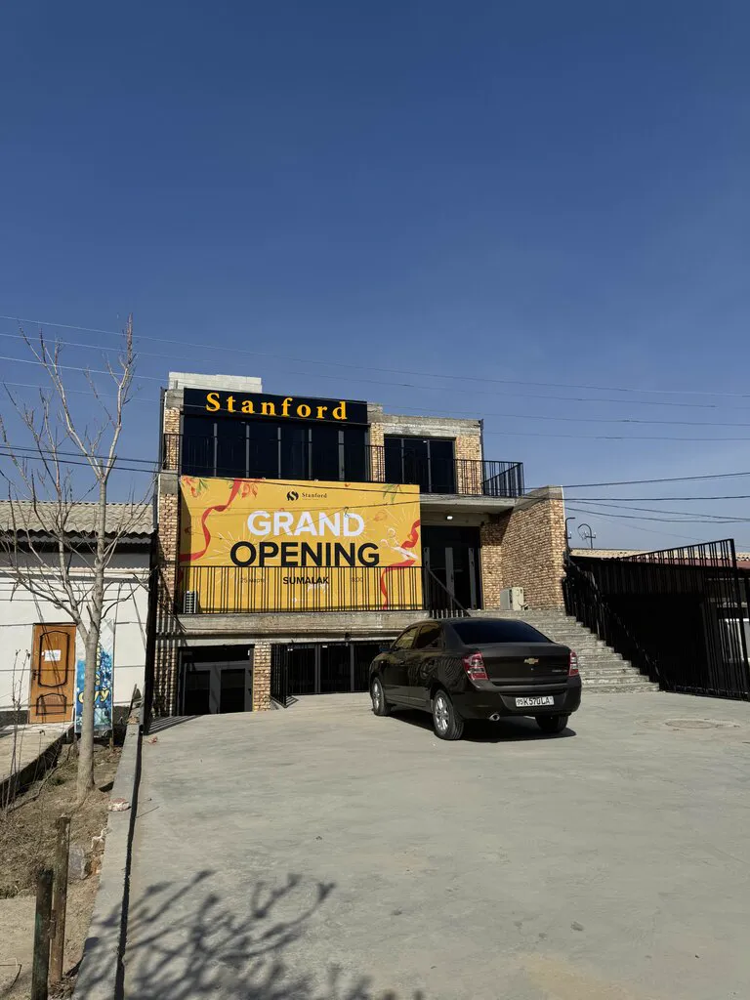

IELTS 9 nátiyjeli ustaz
Bas ustaz IELTS imtixanınan eń joqarı — 9 ball alǵan.
Nókistegi inglis tili orayı
IELTS, General English hám balalar ushın inglis tili. Nókiste eki filial, jumıs waqtı 09:00 den 19:00 ge shekem.
Kurslar
Nege Stanford
Oqıwshılar Stanford’tı ustazlardıń bilimi hám sabaqlardaǵı jaǵımlı ortalıq ushın tańlaydı.

Bas ustaz IELTS imtixanınan eń joqarı — 9 ball alǵan.
Sabaqlardı sertifikatı bar, tájiriybeli oqıtıwshılar ótkeredi.
Sabaqtan tıs waqıtta sorawlar bolsa, supporter’ler járdem beredi.
Nikolay Saraev hám Ch. Abdirov kóshelerinde — ózińizge jaqının tańlań.
Sanlarda
Qalay baslanadı
Atıńız hám telefon nomerińizdi jazıń — bir minut ta ketpeydi.
Administrator qońıraw etedi, dárejeńiz anıqlanıp, sáykes topar tańlanadı.
Ózińizge qolaylı filial hám waqıttı tańlap, oqıwdı baslaysız.

Sabaqlardan kórinisler, oqıwshılardıń nátiyjeleri hám jańalıqlar — @stanford_nukus betinde.
Oqıwshılardıń pikiri
“Nókistegi eń jaqsı inglis tili oraylarınıń biri. Bahaları qolaylı, bilim sapalı. Oqıtıwshılar mádeniyatlı, aqıllı hám óz isiniń sheberi.”
“Sabaqlar qolaylı hám jaǵımlı ortalıqta ótedi, sonlıqtan oqıw ańsat hám qızıqlı. Oqıtıwshılar temanı tolıq túsindiredi, sorawlarǵa hámme waqıt juwap beredi.”
“Kishkenelerden úlkenlerge shekem — inglis tilin úyreniwdi qálegen hár bir adam ushın jaqsı oray. Ustazlarda IELTS 7 hám onnan joqarı sertifikat bar.”
Filiallar
Úyińizge yamasa oqıw ornıńızǵa jaqın filialdı tańlań.

1-filial
2-filial · jańa imaratIELTS, General English (ulıwma inglis tili) hám balalar ushın inglis tili (Kids English).
Awa, balalar ushın bólek toparlar bar. Jası hám dárejesi boyınsha tolıq maǵlıwmattı administrator beredi.
Nókistegi eki filialda: Nikolay Saraev kóshesi, 34 hám Ch. Abdirov kóshesi, 44A.
Baha kurs hám toparǵa qarap ózgeredi. Anıq bahanı administrator aytadı: +998 91 303 60 01 yamasa +998 99 457 60 01.
Sabaqqa jazılıw
Arza qaldırıń — administrator siz benen baylanısıp, kurs, topar hám qolaylı waqıttı kelisip aladı.